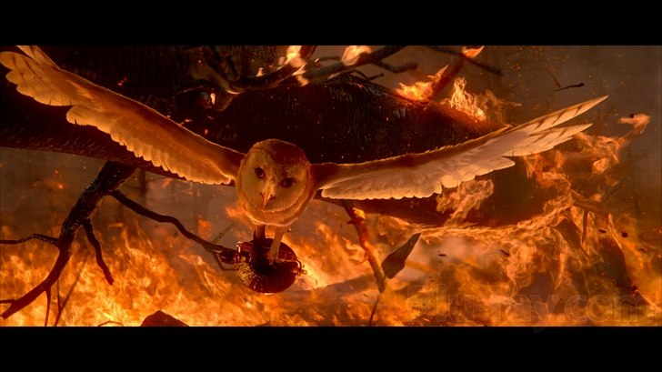

All the chaws go on missions. The coillering chaws go into forest fires to gather coals. Some catch flying coals and others gather coals from the ground. They put the coals in buckets. When the owls have enough coals they give thenm to the blacksmith, Bubo. Then they take the bucket full of coals back to the Great Ga'Hoole Tree.

The weather does not really have missions. However when there is bad weather the weather chaw flies through it. Unless it is a really bad weather such as a severe hurricane or other severe weather.
In some of the books they have wars. The coilerers carry flaming sticks. The navagators navagate where the villans are. They all re trained to fight with battle claws which are metal shoes shaped as claw to fit their claws. The coilerers also use forest fires to their advantage.